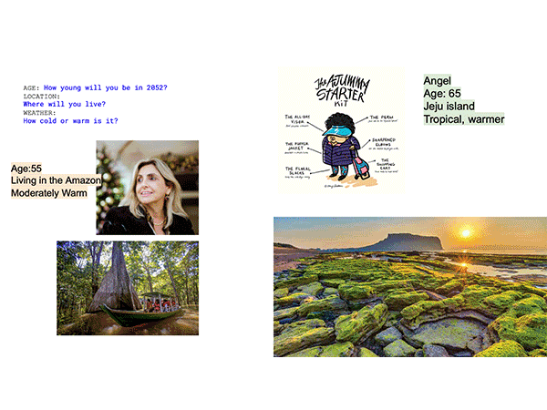
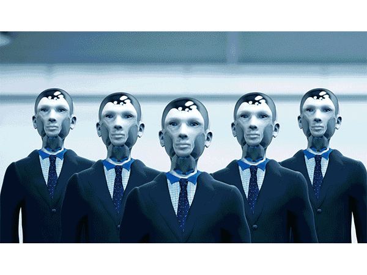
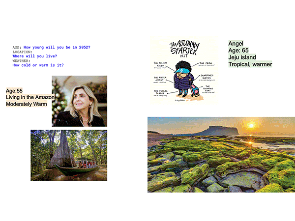
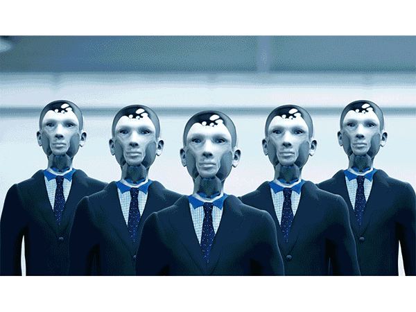

🗓 11-14 Jaunary 2022
Each day we used some of our time to respond to hypothetical future-facing scenarios, like what is my daily life in a billion seconds from today, in 2052? What kind of city and infrastructure, challenges, and resources, can we imagine in 2052? I found these imaginary prompts intruiging but surprisingly difficult to jump into. It was especially difficult to let go of my preconceptions and completely give into imagination. For example in thinking about myself in 2052, I still held on to a lot of preferences I have about my life at the moment and failed to imagine a complete new wold in 30years.

In our group exercise to imagine a future city and present a mayoral speach, we came up with a city called Moblandis (by choosing letters one after another), and decided that it was a city that was in the midst of being flooded due to climate crisis, on the northern coast of Russia. We determined water as its currency because we imagined fresh water would become scarce, and that its rulers were cyborgs that were from desendents of the big tech during the internet age. The second half of the story was told by the underground organization called "metaverse" who seeked democracy and freedom from the cyborg dictatorship.

Some of my key take-aways from this course:
See our full presentation
Designing for the Next Billion Seconds
We opened term two with Andres' intruiging question, "What futures do we want to remember one billion seconds from now?" Andres is the founder of IAM creative research lab, an organization with the aim to help citizens make better decisions using design and address the socio-economic impact of the digital world. Although we were meeting digitally from our homes, the format of the class was engaging and dynamic. We discussed our thoughts on existential questions like: What is my definition of future?, why do we use a decimal numeral system to count and measure everything?, and what is everything?Each day we used some of our time to respond to hypothetical future-facing scenarios, like what is my daily life in a billion seconds from today, in 2052? What kind of city and infrastructure, challenges, and resources, can we imagine in 2052? I found these imaginary prompts intruiging but surprisingly difficult to jump into. It was especially difficult to let go of my preconceptions and completely give into imagination. For example in thinking about myself in 2052, I still held on to a lot of preferences I have about my life at the moment and failed to imagine a complete new wold in 30years.

In our group exercise to imagine a future city and present a mayoral speach, we came up with a city called Moblandis (by choosing letters one after another), and decided that it was a city that was in the midst of being flooded due to climate crisis, on the northern coast of Russia. We determined water as its currency because we imagined fresh water would become scarce, and that its rulers were cyborgs that were from desendents of the big tech during the internet age. The second half of the story was told by the underground organization called "metaverse" who seeked democracy and freedom from the cyborg dictatorship.

Some of my key take-aways from this course:
- Imagine the future make more inclusive and less conclusive.
- "Look at difference differently" - Edouard Glissant
- The concept of DeGrowth presented by Giorgos Kallis
- Solidarity > Charity
- Imagination is a muscle that needs to be exercised to keep alive
See our full presentation